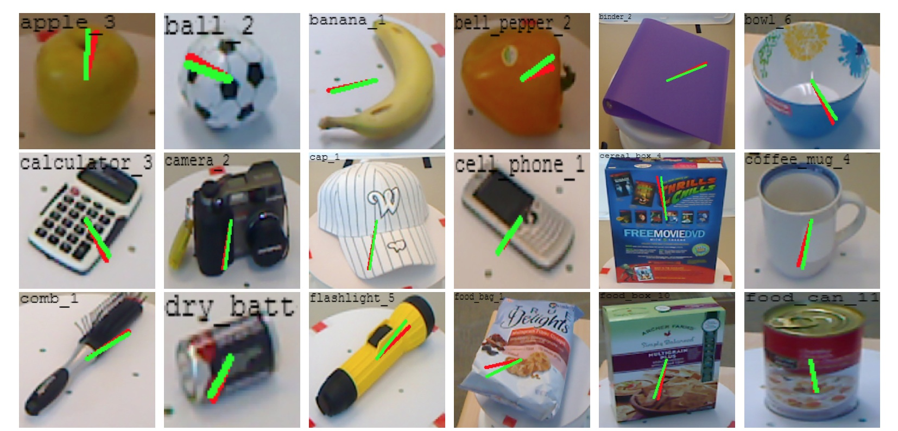
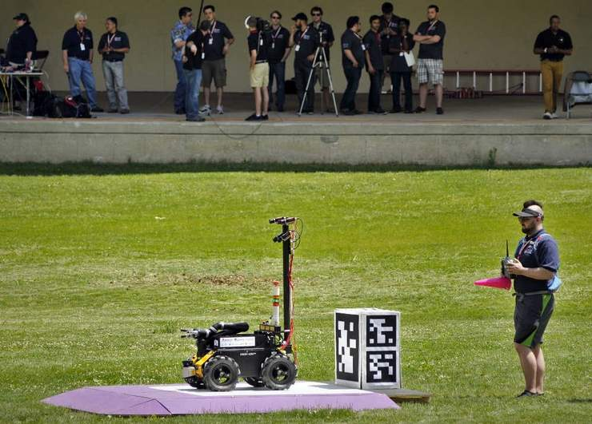
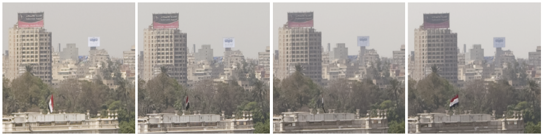
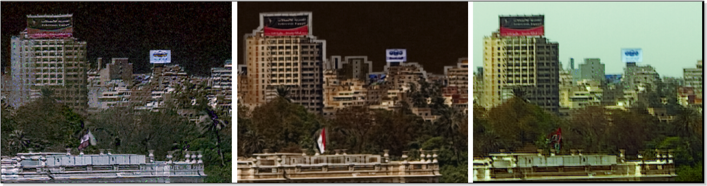

|
Tarek El-Gaaly PhD Candidate @ Department of Computer Science, Rutgers University Contact: tgaaly [at] rutgers [dot] edu Short Bio: I am a computer science Ph.D. student at Rutgers University. I am a member of the Computer Vision Group at CBIM under Professor Ahmed Elgammal. My research interests are in Computer Vision, Machine Learning and Robotics. more information can be found in my resume. |
Publications / Projects
 | Perceptually-Grounded Probabilistic Object-Part Decomposition of 3D Point Clouds
This work uses Bayesian Hierarchical Grouping for perceptual object-part decomposition based on medial-axis representations of parts.
|
|||


|
Joint Object Categorization and Pose Estimation
Using manifold analysis to perform joint object categorization, instance recognition and pose estimation. Multiiple images of an object are known to lie on a low-dimensional view-manifolds. The premise of this work is that feature spaces deform unit circle view-manifolds, in the case of table-top objects rotating on a turn-table and captured by a camera from a fixed height, or a sphere manifold in the more general case. The deformation is captured by a homeomorphic mapping from input feature space to points on a conceptual view-manifold (which can be seen to represent the low-dimensional geometry of views around an object).
| |||


| RGBD Table-top Object Pose Recognition The red annotations are the ground-truth pose angles (i.e. azimuth/yaw) of the tabletop objects (from the RGBD-dataset - University of Washington). Blue annotations signify the estimated pose based on visual local feature information alone. Green annotations represent the final recognized pose using both visual and depth information [Refer to ICPR 2012].
| |||
| | Object Localization using Label Propagation over Local Features | |||
|  | NASA Centennial Challenge 2013 - Sample Return Challenge Collaborated with Worcester Polytechnic Institute (WPI) on this challenge. Our robot AERO (Autonomous Exploration Rover) can be seen below on the starting platform with us in the background. The website documenting the building of the robot can be seen here: | |||
| Autonomous Airboat Obstacle Avoidance (using monocular vision on a smartphone) Work was conducted at Carnegie Mellon University - Robotics Institute (Field Robotics Center) (CMU Cooperative Robotic Watercraft) More videos on Robotics.net | ||||
|   | The first figure shows a sequence of images of a hazy scene. The second figure shows the scene resulting from state-of-the-art dehazing and our dehazing algorithm. The last figure shows a comparison with 2 other techniques for dehazing: polarization dehazing and dark channel dehazing. Our dehazing method recovers the hue of the scene and also returns a natural looking sky without any extra processing (see rightmost image of the second figure). Refer to VISAPP 2010 paper below. For a full description of my MSc Thesis - refer to the thesis document: [pdf] |